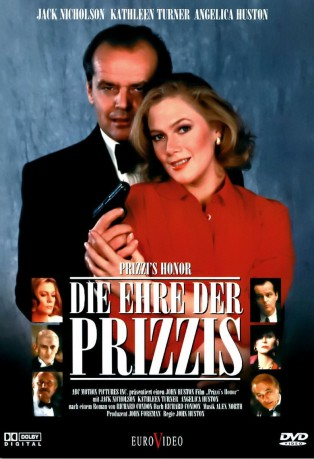
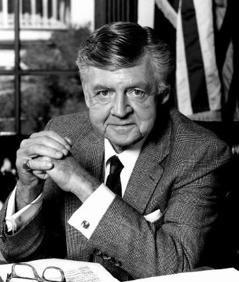

#7037 Die Ehre der Prizzis
Alternativ: Prizzi's Honor
Auszeichnungen: 1 Oscars gewonnen für 7 Oscars nominiert 4 GoldenGlobes gewonnen 1 BAFTA-Awards gewonnen
 
 IMDB-Wertung: 6.8 / 10
IMDB-Wertung: 6.8 / 10  Metascore: 0
Metascore: 0 
Charley Partanna arbeitet als Auftragskiller für die New Yorker Mafiafamilie der Prizzis. Auf einer Hochzeitsfeier lernt er die gutaussehende Irene Walker kennen und beginnt mit ihr zu flirten. Als sie plötzlich von den Feierlichkeiten verschwindet, macht sich Charley auf die Suche nach der Schönen. In L.A. treffen sie sich wieder und beschließen möglichst bald zu heiraten. Zurück in New York erfährt er, dass seine Angebetete eine Auftragskillerin ist, was ihn jedoch nicht von seinen Heiratsplänen abbringt. Seine eifersüchtige Ex-Freundin Maerose Prizzi, die Tochter des Familienoberhaupts Don Corrado, will sich das nicht bieten lassen und setzt einen Auftragskiller auf Charley an. Und wer wäre da besser geeignet, als seine eigene Ehefrau...
Jahr: 1985
Dauer: 123 Minuten
FSK: 12
Land: USA Studio: 20th Century FoxTonspuren: DD2.0 - ,
Untertitel:
Auflösung: 1080p (1920x1040) Größe: 12800 MB
Genre: Drama, Komödie, Krimi, Liebe
Regisseur:  John Huston
John Huston
Drehbuch: Richard Condon
Soundtrack:
Darsteller:
 Jack Nicholson als Charley Partanna
Jack Nicholson als Charley Partanna Kathleen Turner als Irene Walker
Kathleen Turner als Irene Walker Robert Loggia als Eduardo Prizzi
Robert Loggia als Eduardo Prizzi John Randolph als Angelo 'Pop' Partanna
John Randolph als Angelo 'Pop' Partanna William Hickey als Don Corrado Prizzi
William Hickey als Don Corrado Prizzi Anjelica Huston als Maerose Prizzi
Anjelica Huston als Maerose Prizzi Lawrence Tierney als Lt. Hanley
Lawrence Tierney als Lt. Hanley CCH Pounder als Peaches Altamont
CCH Pounder als Peaches Altamont Vic Polizos als Phil Vittimizzare
Vic Polizos als Phil Vittimizzare-  Dick O'Neill als Bluestone
 Joseph Ruskin als Marxie Heller
Joseph Ruskin als Marxie Heller Ray Iannicelli als Photographer #1
Ray Iannicelli als Photographer #1 Stanley Tucci als Soldier
Stanley Tucci als Soldier- Skip O'Brien als Bartender
- Julia Campanelli als Woman in Church , uncredited
- Vince Cecere als Cheech Prizzi , uncredited
- John De Bello als Waiter , uncredited
 Tony Devon als The Best Man , uncredited
Tony Devon als The Best Man , uncredited Anton Evangelista als Bridal Usher #3 , uncredited
Anton Evangelista als Bridal Usher #3 , uncredited- Annabelle Larsen als Airport Traveler , uncredited
- Mark Lotito als Young Priest , uncredited
- Lou Mast als Wedding Guest , uncredited
 Garry Pastore als Usher #2 , uncredited
Garry Pastore als Usher #2 , uncredited- Jared Simon als Wedding Guest , uncredited
 Mike Tremont als Arsonist , uncredited
Mike Tremont als Arsonist , uncredited- Lee Richardson als Dominic Prizzi
- Michael Lombard als Rosario Filargi 'Finlay'
- George Santopietro als Plumber
- Ann Selepegno als Amalia Prizzi
- Sully Boyar als Casco Vascone
- Antonia Vasquez als Theresa Prizzi
- Tomasino Baratta als Opera Singer
- John Calvani als Don's Bodyguard
- Murray Staff als Gallagher
- Raymond Serra als Bocca
- Seth Allen als Alvin Gomsky
- Dominic Barto als Presto Ciglione
- Teddi Siddall als Beulah
- Tom Signorelli als Photographer #2
- Themi Sapountzakis als Policeman
- Debra Kelly als Bride at Mexican Chapel
- Scott Campbell als Groom at Mexican Chapel
- Beth Raines als Airport Clerk
- Michael Sabin als Charley Partanna at 17
- Michael Tuck als Anchorman Fred
- Michael Fischetti als Kiely
- Kenneth Cervi als Bodyguard
- Marlene D. Williams als Mrs. Calhane
- Joe Kopmar als Cigar Smoker #1
- Erasmus C. Alfano als Cigar Smoker #2
Datei: X:\1985\Ehre der Prizzis, Die (1985, FSK12, 1920x1040).mkv seit 18.09.2017
Festplatte: HD 1980-1986
 Es gibt insgesamt 43 Filme in der Gruppe '1985'
Es gibt insgesamt 43 Filme in der Gruppe '1985'